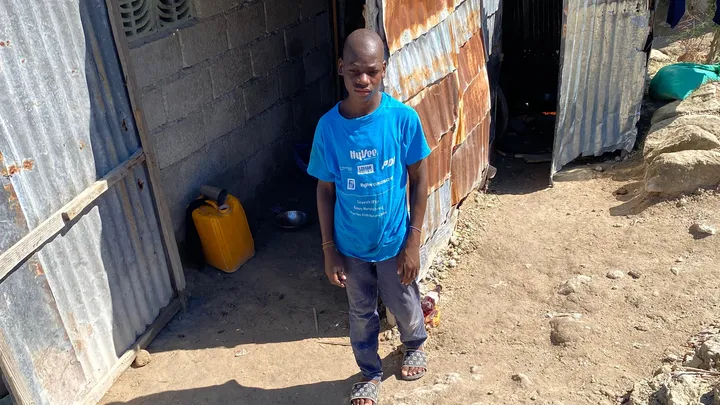
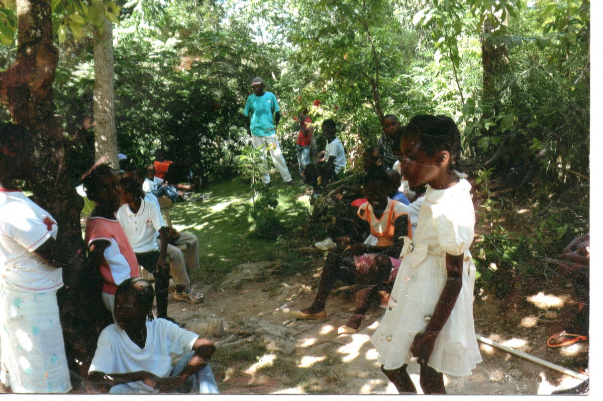
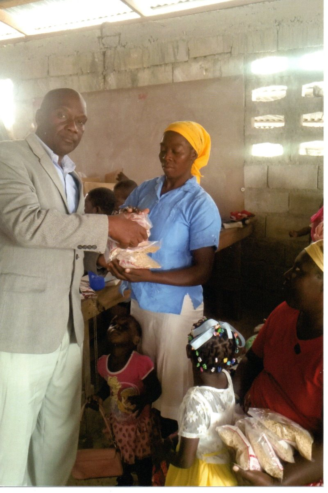
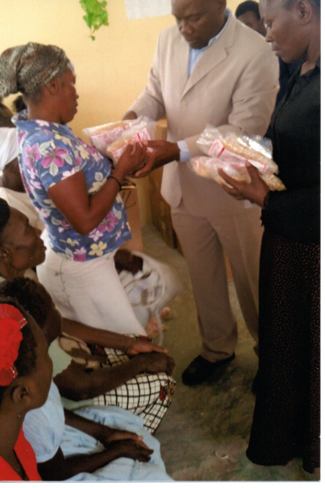

If you would like to see more pictures of the village, click here.
Evangelical Missions has been working for years to help the people of Haiti in desperate need of food, clothing and building supplies. Environmental and economical conditions make everyday living difficult. The small village of Ganthier Fonds-Parisiene, Haiti, where Pastor Jean Decembre ministers, survives on the sale of fruits and vegetables and receives very little help. Artesian wells for drinking water are rare. They get little or no help from the organizations that support Haiti.
If you need more information, contact Rev. Jean J. Decembre:
phone- 239-298-4541
email:- divineinspiration2@gmail.com
If you would like to donate click here.